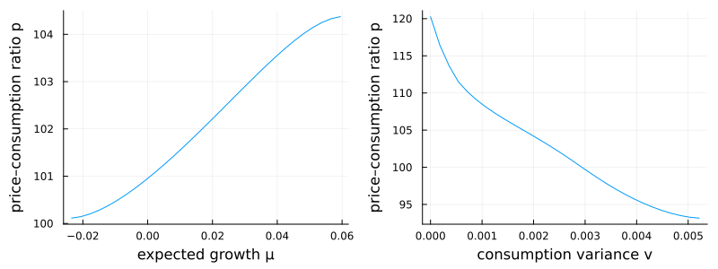

Haddad: concentrated ownership and endogenous volatility
This asset-pricing model has two state variables — expected consumption growth $\mu$ and consumption variance $v$ — and prices the aggregate consumption claim under Epstein–Zin preferences, much like the long-run-risk model. Its distinctive feature is concentrated ownership: only a limited set of active investors bears aggregate risk, and the equilibrium active-capital share $\alpha^\star$ is determined endogenously,
\[\alpha^\star = \bar\alpha - \sqrt{\dfrac{\lambda\,\bar\alpha}{\tfrac12\,\gamma\,\bigl(\sigma_c^2 + \sigma_{p,\mu}^2 + \sigma_{p,v}^2\bigr)}},\]
where the return-volatility terms $\sigma_{p,\mu},\sigma_{p,v}$ depend on the derivatives of the unknown price function $p(\mu, v)$. Because $\alpha^\star$ feeds the market price of risk $\kappa=\alpha^\star\gamma\sigma$ while return volatility feeds back into $\alpha^\star$, risk premia and volatility are endogenous and jointly determined. The two states themselves follow mean-reverting square-root processes.
The model
The parameters live in a struct:
using EconPDEs, Distributions, Plots
Base.@kwdef struct HaddadModel
# consumption process parameters
μbar::Float64 = 0.018 # long-run mean of expected consumption growth μ
vbar::Float64 = 0.00052 # long-run mean of consumption variance v
κμ::Float64 = 0.3 # mean-reversion speed of μ
νμ::Float64 = 0.456 # volatility loading of the μ process
κv::Float64 = 0.012 # mean-reversion speed of v
νv::Float64 = 0.00472 # volatility loading of the v process
# active capital
αbar::Float64 = 1.2 # maximum active-capital share
λ::Float64 = 0.018 # cost of active participation (ownership friction)
# utility parameters
ρ::Float64 = 0.0132 # rate of time preference (discount rate)
γ::Float64 = 10.0 # relative risk aversion
ψ::Float64 = 1.5 # elasticity of intertemporal substitution
endMain.HaddadModelThe state space
We build the grid and the initial guess first, because they fix the names used everywhere else. This model has two state variables, so the grid is a NamedTuple with two keys (μ and v); the guess is a NamedTuple whose key is the unknown function (p, the price–consumption ratio), a matrix over the $(\mu, v)$ grid. These names reappear inside the equation below — e.g. pμ_up is the forward finite difference of p in μ, and pμμ is the second derivative. The grid spans the ergodic ranges of $\mu$ (Normal) and $v$ (Gamma). The $\sqrt v$ diffusion vanishes at $v = 0$, a degenerate boundary where no condition is imposed.
m = HaddadModel()
σ = sqrt(m.νμ^2 * m.vbar / (2 * m.κμ))
μmin = quantile(Normal(m.μbar, σ), 0.001)
μmax = quantile(Normal(m.μbar, σ), 0.999)
μs = range(μmin, μmax, length = 30)
α = 2 * m.κv * m.vbar / m.νv^2
β = m.νv^2 / (2 * m.κv)
vmin = quantile(Gamma(α, β), 0.001)
vmax = quantile(Gamma(α, β), 0.999)
vs = range(vmin, vmax, length = 30)
stategrid = (; μ = μs, v = vs)
guess = (; p = ones(length(stategrid[:μ]), length(stategrid[:v])))(p = [1.0 1.0 … 1.0 1.0; 1.0 1.0 … 1.0 1.0; … ; 1.0 1.0 … 1.0 1.0; 1.0 1.0 … 1.0 1.0],)The equation
We now write the function encoding the HJB equation. Following the package convention, it takes the current state (a grid point) and u (each unknown together with its finite-difference derivatives there) and returns the time derivative of each unknown.
function (m::HaddadModel)(state::NamedTuple, u::NamedTuple)
(; μbar, vbar, κμ, νμ, κv, νv, αbar, λ, ρ, γ, ψ) = m
(; μ, v) = state
(; p, pμ_up, pμ_down, pv_up, pv_down, pμμ, pvv) = u
# drifts and volatilities of consumption, μ, and v
μc = μ
σc = sqrt(v)
μμ = κμ * (μbar - μ)
σμ = νμ * sqrt(v)
μv = κv * (vbar - v)
pμ = (μμ >= 0) ? pμ_up : pμ_down
pv = (μv >= 0) ? pv_up : pv_down
σv = νv * sqrt(v)
σp_Zμ = pμ / p * σμ
σp_Zv = pv / p * σv
σp2 = σp_Zμ^2 + σp_Zv^2
μp = pμ / p * μμ + pv / p * μv + 0.5 * pμμ / p * σμ^2 + 0.5 * pvv / p * σv^2
# market price of risk, with endogenous active-capital share α*
αstar = αbar - sqrt(λ * αbar / (0.5 * γ * (σc^2 + σp_Zμ^2 + σp_Zv^2)))
αstar = clamp(αstar, 0.0, 1.0)
κ_Zc = αstar * γ * σc
κ_Zμ = (αstar - (1 / γ - 1) / (ψ - 1)) * γ * σp_Zμ
κ_Zv = (αstar - (1 / γ - 1) / (ψ - 1)) * γ * σp_Zv
κ2 = κ_Zc^2 + κ_Zμ^2 + κ_Zv^2
# pricing equation for the price–consumption ratio (interest rate substituted out)
pt = - p * (1 / p - ρ + (1 - 1 / ψ) * (μc - 0.5 * γ * σc^2 * (1 - (αstar - 1)^2)) + μp + (0.5 * (1 / ψ - γ) / (1 - 1 / ψ) + 0.5 * γ * (1 - 1 / ψ) * (αstar - 1)^2) * σp2)
return (; pt)
endWith the equation, grid, and guess in hand, pdesolve solves the stationary system:
result = pdesolve(m, stategrid, guess)EconPDEResult
solution: p (30×30)
residual_norm: 1.90e-11
converged: true (tolerance 1.49e-08)The solution
Holding one state fixed at its median, the price–consumption ratio rises with expected growth $\mu$ and falls with consumption variance $v$. The growth effect reflects the elasticity of intertemporal substitution ($\psi>1$): investors pay more for the claim when future growth is high. The variance effect is the risk-premium channel — and here it is amplified, because only a concentrated set of active owners bears aggregate risk, raising the effective price of risk $\alpha^\star\gamma\sigma$ and making valuations more sensitive to volatility than under full risk sharing.
p = result.solution.p
iμ = div(length(stategrid[:μ]), 2)
iv = div(length(stategrid[:v]), 2)
p1 = plot(stategrid[:μ], p[:, iv]; xlabel = "expected growth μ", ylabel = "price–consumption ratio p", legend = false)
p2 = plot(stategrid[:v], p[iμ, :]; xlabel = "consumption variance v", ylabel = "price–consumption ratio p", legend = false)
plot(p1, p2; layout = (1, 2), size = (800, 300))
This page was generated using Literate.jl.